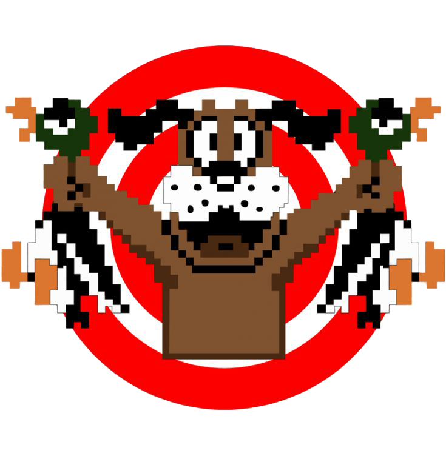

Duckhunt Stage

Duck Hunt is a fantastic arcade game that takes inspiration from the original classic available on Nintendo game systems. You must shoot the moving ducks down with your mouse and see how many points you can score. Be sure to avoid shooting your faithful dog!